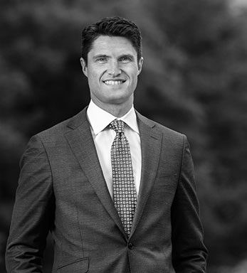

Focused on
Client Results
Who We Are and What We Do
Galt & Company helps Chief Executives and management teams of Fortune 500 companies develop strategies and organizational capabilities that deliver superior and sustain superior growth in shareholder value.
We work with some of the world’s best corporations and have contributed to some of the more notable corporate success stories of the last two decades. Our work impacts corporate and business unit strategies, resource allocation, performance management – and builds the company’s ongoing management capabilities.
We bring the disciplines of the capital market inside a corporation and enable managers at all levels to grow the shareholder value contribution of their businesses.
Shareholder value contribution is always highly concentrated within markets and businesses. This concentration offers significant opportunity to better focus strategies and resources to improve returns and accelerate profitable growth. Through better strategies and resource allocation, our clients develop a reinvestment advantage that leads to a sustained competitive advantage and superior shareholder returns.
Through lasting improvements in management capabilities, decision processes and standards, companies are able to multiply those returns over many years. We believe that outside advisors should build clients’ capabilities—not replace them.
Jim Kilts, former Chairman and CEO of The Gillette Company and Nabisco, is a friend of mine who turned around several companies. I asked him how he did this, and he mentioned that he used a particular firm—Galt & Company.
John Allison, former CEO, BB&T Corp.
Our Competitive Edge
We are the only top management advisory firm that helps its clients build the capabilities to “win” in both the customer and capital markets…
1. Winning in the Customer Markets – by developing differentiated business models that create more customer value and gain share of market profits
2. Winning in the Capital Markets – by focusing resources to maximize sustainable returns, increasing re-investable cash flow and shareholder value
…and we have an unmatched track record of client success, with average sustainable client shareholder returns over 150% of their industry peer index.
Our approach is practical and tailored to each company’s unique requirements, based on our deep experience in helping some of the world’s best corporations across a range of industries.
Galt & Company partners are different from other top investment advisors—they deliver results, not just recommendations. They have had a tremendous impact on results and organizational capabilities.
Travis Engen, former CEO, Alcan and ITT
Our Leadership
Galt clients benefit from the combined experience of the firm’s senior leadership team and over thirty years of experience working with many of the world’s best companies and most accomplished Chief Executives.
Our consultants are well-versed in the theory and
practice of microeconomics, corporate finance,
corporate and business-unit strategy, management
processes and organizational design and incentives.
Introducing our leadership team...
+ More about Scott
M. Scott Gillis For 30 years, Scott has been advising chief executives and board-level management on the strategic, operating and organizational changes needed to deliver superior shareholder returns.
Scott is a recognized authority on improving corporate performance in both the customer and capital markets and has extensive experience in consumer products, food and beverage, financial services, retailing, broad-based industrials, chemicals, aerospace and defense. Scott co-founded Galt & Company and is the co-author of Beliefs, Behaviors and Results: The Chief Executive’s Guide to Delivering Superior Shareholder Value. Prior to consulting, Scott was a founding member of a publicly traded U. S. oil and gas company and worked as an exploration geophysicist.
Scott is a graduate of the Harvard Business School and earned a geophysical engineering degree from the Colorado School of Mines.
M. Scott Gillis
Senior Managing Director
+ More about Lee
Lee Mergy Lee has more than two decades’ experience helping top management of leading global corporations make the strategic and operational changes that deliver superior shareholder returns. Lee’s industry experience includes consumer products, food and beverage products; paper and forest products; financial services, telecommunications and pharmaceuticals. Lee co-founded Galt & Company and is the co-author of Beliefs, Behaviors and Results: The Chief Executive’s Guide to Delivering Superior Shareholder Value. Prior to consulting, Lee was an economic analyst in Washington, D.C. and worked as an engineer and manager at General Dynamics.
Lee has a master’s degree in public and private management from the Yale School of Management and an aerospace engineering degree from the University of Kansas.
Lee Mergy
Senior Managing Director
+ More about Joe
Joe Shalleck
Joe has over 20 years’ experience helping companies build the strategies and organizational capabilities to sustain winning shareholder returns. Joe has depth of experience in financial services, basic and engineered materials, industrial aerospace and consumer products. Joe co-founded Galt & Company and is the co-author of Beliefs, Behaviors and Results: The Chief Executive’s Guide to Delivering Superior Shareholder Value. Prior to consulting, Joe held engineering and management positions at Corning and General Electric.
Joe has a master’s degree in business administration from the Wharton School of Business at the University of Pennsylvania and an industrial engineering degree from Lehigh University.
Joe Shalleck
Senior Managing Director
+ More about Jonathan
Jonathan Lippincott
Jonathan Lippincott has extensive experience advising some of Galt’s top clients in a variety of industries, including industrial products, healthcare, and consumer products. Prior to joining the firm, Jonathan consulted for some of the nation’s largest hospital systems, working to support business development and performance improvement initiatives.
Jonathan has a master’s degree in business administration from the University of Michigan and an undergraduate degree from Vanderbilt University.
Jonathan Lippincott
Managing Director
+ More about Greg
Greg Marion
With over 20 years of experience, Greg has a proven track record of driving profitable growth. This includes more than 10 years as an advisor to senior leadership of large companies, as well as more than 10 years working as a senior leader within Fortune 150 companies in roles spanning strategy and product profit and loss accountability.
Greg has deep expertise in financial services and insurance, as well as broader industry experience across food & beverage, consumer packaged goods, and industrial manufacturing. His combined consulting and corporate roles make him uniquely capable of creating value-based strategic agendas and of developing and executing the supporting plans that address organizational and operational needs.
Greg has a master’s degree in business administration from the University of Chicago’s Booth School of Business and a bachelor of arts with honors from the University of Michigan.
+ More about Ted
Ted McCarthy
Ted has 15 years of experience in advising senior executives on high-value strategic, organizational and operational decisions.
Ted has a depth of industry experience including food and beverage, financial services, packaging, paper and forest products and basic manufacturing. In addition to consulting, Ted previously held a management position with a development stage biotechnology company.
Ted has a master’s degree in public and private management from the Yale School of Management and a chemical engineering degree from Princeton University.
gement and a chemical engineering degree from Princeton University.

+ More about Julian
Julian Millikan
Julian has 13 years of experience partnering with clients to identify and capture the highest value strategic, organizational, and operational opportunities to drive growth in shareholder value.
Julian’s engagements have spanned the retail, fast moving consumer goods (FMCG), industrial equipment, and financial services industries whic
h have taken him to multiple countries across Latin America, Europe and Africa.
Julian holds a master’s degree in business administration from the Kellogg School of Business at Northwestern University and undergraduate degrees from both the Wharton School of Business and the School of Engineering at the University of Pennsylvania.

+ More about John
John Reuter John has nearly 10 years’ strategic consulting and advisory experience, working alongside top executives from the companies Galt advises. He has extensive experience and insight in the consumer products, healthcare and financial services industries.
John graduated from Columbia University with a bachelor’s degree in economics.
John Reuter
Managing Director
+ More about Ben
Ben Salcetti Ben has over 6 years’ experience consulting to clients in healthcare, U.S. building products, energy and financial services.
He holds a bachelor of arts in economics, mathematics and Spanish from Northwestern University. Ben also received his master’s in business administration from Wharton University as well as a master’s in international studies from the Lauder Program.
+ More about Alan
Alan Slatas Alan has over 25 years’ experience working with C-level executives and their management teams to align strategic, resource allocation and performance management disciplines to improve shareholder value. Alan has initiated relationships with and brought improved business performance to companies that include Dow Chemical, Pepsi, General Electric, Microsoft, Halliburton, Kellogg’s, Merck, Avery Dennison and BorgWarner.
Prior to joining Galt & Company, Alan served as executive vice president of sales and marketing at EVA Dimensions. He also served as founder and vice president of business development at Next Economy Partners, an emerging technology research firm. As a senior director at Gartner Group he accrued 10 years of managing integrated solutions, developing customized consulting services to help C-suite executives at major technology firms.
He holds a degree from the State University of New York College at Plattsburgh.
Alan Slatas
Managing Director
+ More about Anne
Anne Waehner Anne has 15 years’ experience supporting human resources and recruiting efforts for management consulting firms. She focuses her expertise on strategic people initiatives that promote the professional development of employees. Anne is certified in behavior assessment tools, including Myers-Briggs Step II and the Predictive Index. She holds degrees from Bates College and the University of Virginia.
Anne Waehner
Senior Director